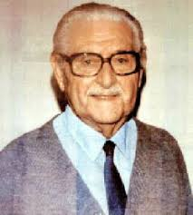

História e Regras
O futsal surgiu no Uruguai, na década de 1930, criado pelo professor Juan Carlos Ceriani. Ele queria adaptar o futebol para ser jogado em quadras menores, principalmente em escolas e clubes. O esporte se espalhou rapidamente pela América do Sul e se tornou muito popular no Brasil, que hoje é uma das maiores potências do mundo na modalidade.
O jogo é disputado por duas equipes com cinco jogadores cada (quatro na linha e um goleiro). As partidas têm dois tempos de 20 minutos, e a bola é menor e mais pesada que a do futebol de campo. As faltas são contadas por tempo e, a partir da sexta falta, o outro time ganha tiro livre direto.
O goleiro só pode usar as mãos dentro da área e não pode receber a bola de volta após soltá-la. Os laterais e escanteios são cobrados com os pés. O futsal é conhecido por ser um esporte rápido, técnico e coletivo, que exige muita agilidade, habilidade e trabalho em equipe.
Equipamentos
Bola oficial: menor e mais pesada que a de futebol, permitindo maior controle em quadra.
Rede: mede 3,20 m de largura por 2,10 m de altura, com recuo de 40 cm no modelo tradicional e 1 m no modelo caixote.